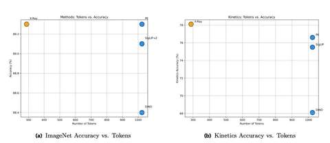

Сегодня разбираем статью, название которой может запутать — посвящена она не медицине, а новой vision-модели Meta*. Работа представляет собой не цельную историю, а набор экспериментов, местами слабо связанных между собой. Но зато даёт практический взгляд на то, как реально собирается большая модель.
Начинают авторы с данных. Основной источник — их собственные сервисы (Facebook*, Instagram*). Используются пользовательские изображения и всё, что к ним прилагается: хэштеги, эмоджи, тексты. Очевидная проблема такого источника — сильный перекос распределения. Популярные концепты встречаются намного чаще редких, и модель начинает переобучаться на них. Поэтому данные отдельно выравнивают по концептам и получают заметный прирост качества. Дополнительно фильтруют датасет через CLIP-подобную модель по порогу схожести.
Модель обучается не только на картинках, но и на видео. Теги пользователей приводят к каноническому виду и отображают в фиксированный набор классов (десятки тысяч концептов WordNet). Причём учитывают не только объекты, но и действия. Сэмплинг подбирают так, чтобы за одну эпоху полностью проходить и картиночный датасет, и видеодатасет. Оба имеют внушительные размеры: более 15 млрд изображений и 10 млрд видео.
Текстовые описания к изображениям генерируют своей моделью, но качество не идеальное — есть повторы, шум. Поэтому их просто переписывают с помощью Llama, что даёт небольшой, но стабильный выигрыш. К своим данным авторы добавляют данные с изображениями из интернета, собранными в рамках работы MetaCLIP.
Архитектурно модель представляет собой стандартный трансформер, адаптированный под видео с 3D-сверткой на входе. Любопытный момент: авторы активно выкидывают ненужные токены по аттеншну (ссылаются на статью EViT), и это экономит вычисления без существенной потери качества.
Обучение разбито на три стадии: сначала masked image modeling, затем классификация по тегам, и только потом CLIP-постановка. На финальном этапе добавляют self-supervised-компонент (SLIP), притягиваются разные аугментации одного изображения или кадры из одного видео.
Также в статье описано много мелких «бантиков»: регуляризация эмбедов через добавление шума и восстановление, Gaussian blur как аугментация, переход на Lion вместо AdamW. Каждый из них даёт доли процента — но таких улучшений много.
Интересен текстовый энкодер. Вместо классического BERT берут LLM и модифицируют её под задачу retrieval: переходят на full attention вместо казуального и дообучают на задачу предсказания близости текстов. Этот подход позволяет перенимать сильные стороны языковых моделей, такие как учет деталей и возможность работы с длинными текстами.
Результаты на академических бенчмарках выглядят хорошо: на уровне или выше SigLIP и DINO при более быстром инференсе, хотя сравнения местами не идеально выровнены. В продакшне прирост существенно больше — авторы отмечают, что стандартные бенчмарки не всегда информативны.
Есть и неожиданные наблюдения. Attention pooling и rotary embeddings не помогли. Сжатие эмбеддингов в предложенном авторами виде сильно портит качество (~4%), но ради скорости поиска они идут на это. Авторы отмечают, что их пайплайн не оптимален, если использовать эмбеды для поиска дубликатов: в таком случае лучше убрать тексты из обучения и использовать self-supervised-постановку.
В конце упоминается ещё один трюк — представление изображений через семантические ID, что уже ближе к рекомендательным системам.
В итоге можно сказать, что эта статья — о масштабировании данных и множестве маленьких инженерных улучшений, каждое из которых даёт небольшой прирост, а в сумме позволяет получить SotA-результат.
Разбор подготовил
CV Time
___
Компания Meta, владеющая Facebook и Instagram, признана экстремистской; её деятельность в России запрещена.
